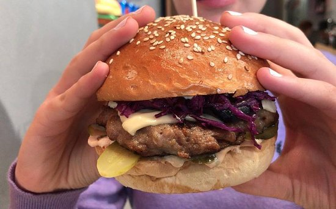
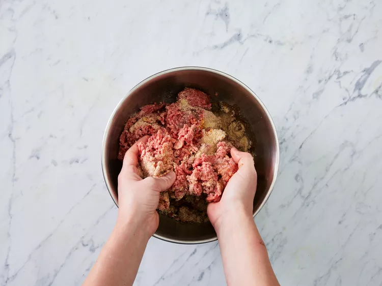
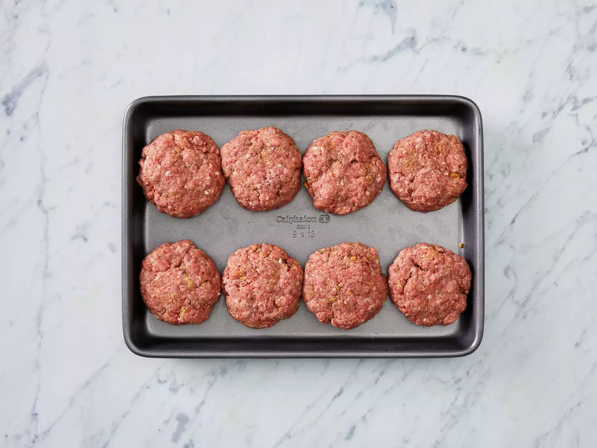

Juiciest Hamburgers Ever

Description
No more dry, lackluster hamburgers. These are juicy, and spices can be easily added or changed to suit anyone's taste. If you find the meat mixture too mushy, just add more bread crumbs until it forms patties that hold their shape.
Ingredients
- 2 pounds ground beef
- 1 egg, beaten
- ¾ cup dry bread crumbs
- 3 tablespoons evaporated milk
- 2 tablespoons Worcestershire sauce
- ⅛ teaspoon cayenne pepper
- 2 cloves garlic, minced
Steps
-
Step

Gather all ingredients.
Step
preheat a grill for high heat
Step
Mix the ground beef, egg, bread crumbs, evaporated milk, Worcestershire sauce, cayenne pepper, and garlic in a large bowl using your hands.

- Step

Form the mixture into 8 hamburger patties
- Step
Lightly oil the grill grate. Grill patties until browned and no longer pink, about 5 minutes per side.
- Step
Server hot and enjoy
Home Page